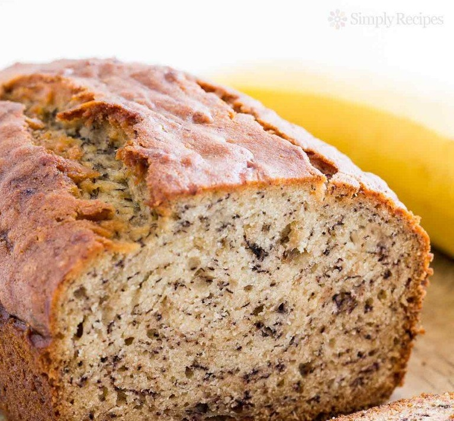

Simply Recipes
Banana Bread

Moist and delicious banana bread recipe. Easy to make, no need for a mixer!
Ripe bananas, butter,
sugar, egg, vanilla, baking soda, and flour.
Ingredients
No need for a mixer for this recipe! Clean-up is easy too, if you want, you can mix everything in one
mixing bowl.
The best bananas to use for banana bread are those that are over-ripe. The yellow peels should be at
least half browned, and the bananas inside squishy and browning.
- 2 to 3 very ripe bananas, peeled (about 1 1/4 to 1 1/2 cups mashed)
- 1/3 cup melted butter, unsalted or salted
- 1 teaspoon baking soda
- Pinch of salt
- 3/4 cup sugar (1/2 cup if you would like it less sweet, 1 cup if more sweet)
- 1 large egg, beaten
- 1 teaspoon vanilla extract
- 1 1/2 cups of all-purpose flour
Instructions
- Preheat the oven to 350°F (175°C), and butter a 4x8-inch loaf pan.
- In a mixing bowl, mash the ripe bananas with a fork until completely smooth. Stir the melted butter into
the mashed bananas.
- Mix in the baking soda and salt. Stir in the sugar, beaten egg, and vanilla extract. Mix in the flour.
- Pour the batter into your prepared loaf pan. Bake for 50 minutes to 1 hour at 350°F (175°C), or until a
tester inserted into the center comes out clean.
- Remove from oven and let cool in the pan for a few minutes. Then remove the banana bread from the pan
and let cool completely before serving. Slice and serve. (A bread knife helps to make slices that aren't
crumbly.)
For more information, go to the Humber College website